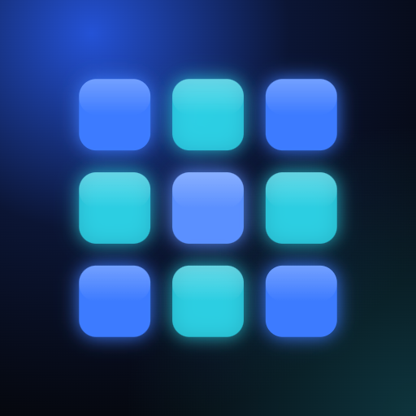

LED Wall ProSoporte
LED Wall Pro · Desarrollada por Kenlly Calderón
Escríbenos: kenllycalderon@outlook.com
Incluye el modelo de tu teléfono, la versión de la app (Más › Ajustes › Acerca de), el modelo y firmware de tu procesador y, si es sobre una compra, tu ID de soporte. Respondemos en un plazo de 2 días hábiles.
¿Cómo funciona la prueba gratis?
Al abrir la app por primera vez tienes 14 días con todas las funciones, incluido el control del procesador. No se te cobra nada al terminar: la app te pide el pago único solo si quieres seguir usándola. Aprovecha la prueba para validar el control con tu propio equipo.
Procesadores compatibles
El control usa el protocolo de control central publicado por NovaStar (TCP 5200). Modelos incluidos:
- NovaStar VX1000
- NovaStar VX600
- NovaStar VX16s
- NovaPro UHD Jr
- NovaStar MCTRL4K
- Otro (protocolo central)
El control de procesadores usa el protocolo de control central publicado por el fabricante. Su compatibilidad depende del modelo y del firmware de cada equipo: pruébalo con tu procesador durante la prueba gratis antes de usarlo en un show.
Formas de conectar
- Demo: procesador simulado para aprender y entrenar al equipo sin hardware.
- Directo: el teléfono se conecta por la red local al puerto TCP 5200 del procesador. Los horarios corren solo con la app abierta.
- Puente LAN: una PC, laptop o Raspberry Pi en la red del procesador recibe las órdenes del teléfono y ejecuta los horarios 24/7, aunque el teléfono esté apagado.
Antes de empezar
- Pon el procesador, el puente y el teléfono en la misma red (router o switch del sistema de video).
- Asigna IP fija al procesador desde su panel frontal. La red de control es el puerto ETHERNET del equipo, no las salidas a la pantalla.
- Cierra NovaLCT o V-Can en la PC si no responde: evita tener varios clientes de control conectados al mismo procesador.
- En iPhone, acepta el permiso de red local la primera vez. Si lo negaste: Ajustes › Privacidad y seguridad › Red local › LED Wall Pro.
Puente LAN: descarga e instalación
El puente es gratuito y funciona en Windows 10/11, Raspberry Pi OS, Debian o Ubuntu. Necesita Node.js 20 o superior (versión LTS).
Descargar puente v1.0.0 (.zip)
Windows
- Instala Node.js LTS y descomprime el .zip en
C:\(se crea la carpetaC:\led-wall-bridge). - Abre PowerShell como administrador y ejecuta:
cd C:\led-wall-bridge powershell -ExecutionPolicy Bypass -File bridge\install-windows.ps1
Queda instalado como tarea que arranca con Windows, se reinicia si falla y abre el puerto 8787 en el firewall para redes privadas. Al terminar muestra la dirección y el token que debes copiar en la app. Si la red de la PC está marcada como Pública, cámbiala a Privada.
Raspberry Pi o Linux
curl -fsSL https://deb.nodesource.com/setup_20.x | sudo bash - sudo apt install -y nodejs unzip unzip led-wall-bridge.zip && cd led-wall-bridge sudo bash bridge/install-linux.sh
Se instala como servicio led-wall-bridge (systemd). Registro en vivo: journalctl -u led-wall-bridge -f.
En la app
- Control › Equipos › Puente LAN: escribe la dirección (por ejemplo
192.168.0.50:8787) y el token. - Toca Probar puente y luego Buscar procesadores.
- Agrega el procesador encontrado y, en Control › Horarios, crea tu programación de brillo.
Para practicar sin procesador instala con -Demo (Windows) o --demo (Linux). Para desinstalar: -Uninstall o --uninstall. No expongas el puerto 8787 a internet.
Prueba de campo
En Control › Estado › Prueba de campo guiada, la app envía cada comando a tu procesador y te pregunta si la pantalla respondió. Hazla sin público y con la pantalla a la vista. Al final puedes compartir el reporte: envíanoslo si algún comando falla y lo revisamos para tu modelo y firmware.
Ya pagué y la app me vuelve a pedir el pago
- En la pantalla de compra o en Más › Ajustes toca Restaurar compras.
- Usa la misma cuenta de Apple o Google con la que compraste.
- Si sigue igual, escríbenos con tu ID de soporte (Más › Ajustes › LED Wall Pro › ID de soporte).
Cambié de teléfono
- Tu compra queda en tu cuenta de la tienda: en el teléfono nuevo toca Restaurar compras.
- Tus proyectos viven en el teléfono. Antes de cambiar, ve a Más › Ajustes › Respaldo completo, comparte el archivo y, en el teléfono nuevo, pégalo en Proyectos › Importar.
Reembolsos
Los cobra y devuelve la tienda. En iPhone pídelo en reportaproblem.apple.com; en Android, desde Google Play › Pagos y suscripciones › Presupuesto e historial.
Los cálculos no coinciden con mi equipo
Los cálculos de estructura, peso, electricidad y señal son referenciales. Antes de montar, verifica cada valor con la ficha del fabricante, la normativa local y personal calificado. La responsabilidad final del montaje y de la operación de los equipos es de quien los ejecuta. Si encuentras un error, envíanos el proyecto exportado o una captura y lo revisamos.